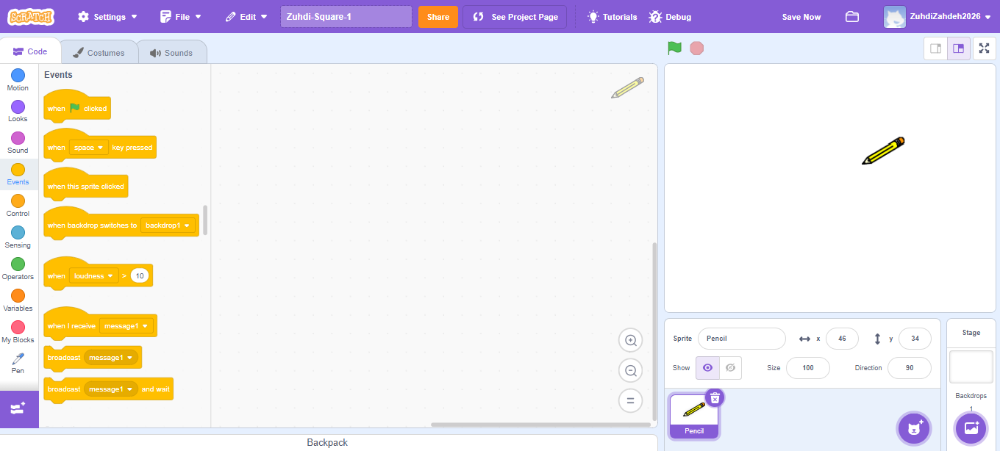
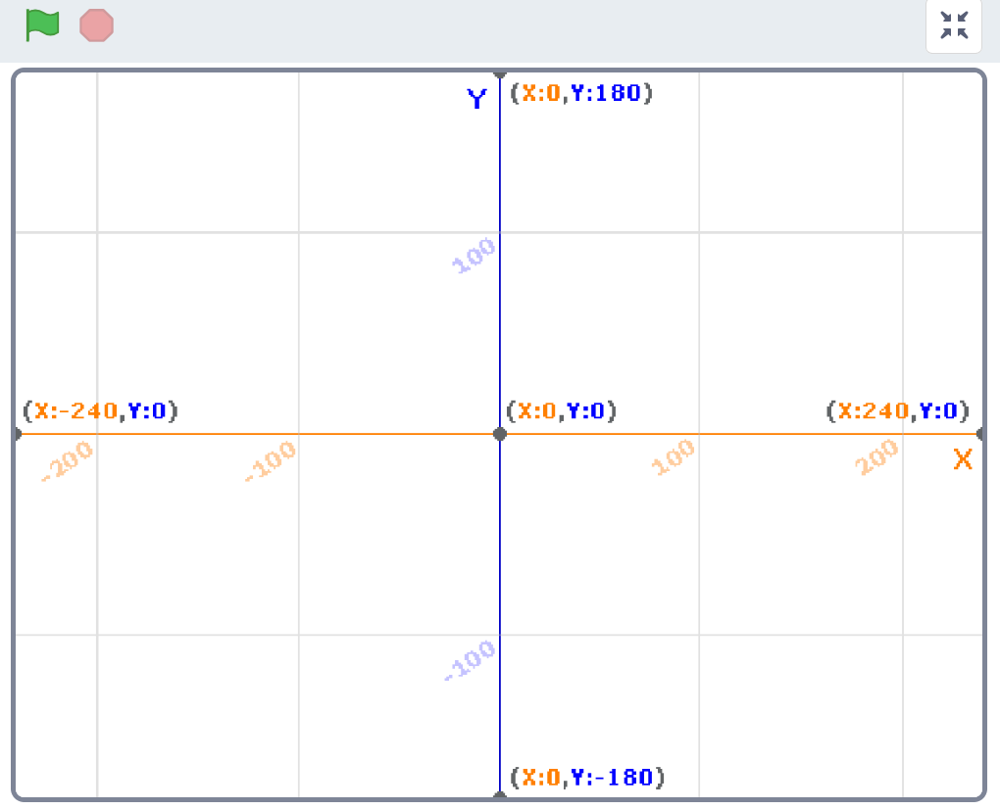

1. مقدمة
مرحباً بك في عالم سكراتش! في هذا الدرس، سنتعرف على الواجهة الأساسية واللبنات البرمجية الرئيسية.
2. واجهة برنامج سكراتش
تنقسم واجهة سكراتش إلى مناطق عمل رئيسية:
- المنصة (Stage): حيث يتم عرض نتيجة المشروع وتحرك الكائنات.
- منطقة الكائنات (Sprites): لإدارة الكائنات وإضافة خلفيات.
- منطقة اللبنات: حيث نجد مجموعات اللبنات البرمجية حسب فئاتها (الحركة، المظهر، الأحداث...).
- منطقة الكود: حيث يتم سحب اللبنات وتركيبها لتكوين البرنامج.

انقر لتكبير الصورة
3. أبعاد مسرح العمل (المنصة)
يعمل مسرح سكراتش بنظام إحداثيات (X/Y) كالآتي:
- المحور X (الأفقي): يتراوح من -240 (أقصى اليسار) إلى 240 (أقصى اليمين).
- المحور Y (العمودي): يتراوح من -180 (الأسفل) إلى 180 (الأعلى).
- المركز: النقطة (0، 0).

نظام الإحداثيات في سكراتش
4. جدول فئات اللبنات في سكراتش
كل صف يمثل فئة لبنات سكراتش؛ خلفية الصف تُطابق لون الفئة في محرّر سكراتش.
| الفئة | أمثلة | شرح مبسّط |
|---|---|---|
| الأحداث (Events) | when green flag clicked when this sprite clicked |
تحدد متى يبدأ تنفيذ الكود. |
| التحكم (Control) | repeat (4) if … then forever |
حلقات وتفرعات وشروط. |
| الحركة (Motion) | move 10 steps turn clockwise 15° go to x: y: |
تحريك الكائنات على المسرح. |
| القلم (Pen) | pen down erase all set pen color to … |
الرسم على المسرح. |
| المظاهر (Looks) | say "Hi" for 2 secs switch costume to … |
تغيير المظهر. |
| الأصوات (Sound) | play sound Meow start sound … |
تشغيل الأصوات. |
| الاستشعار (Sensing) | touching [mouse-pointer]? ask [What's your name?] |
التفاعل مع المستخدم. |
| المشغّلات (Operators) | (1 + 2) pick random 1 to 10 |
عمليات حسابية. |
| المتغيّرات (Variables) | set [score] to 0 change [score] by 1 |
تخزين القيم. |
| اللبنات المخصّصة (My Blocks) | define draw_square call draw_square (100) |
إنشاء لبنات خاصة. |
5. المفاهيم والمفردات الرئيسية
انقر على كل مصطلح لمعرفة تعريفه:
البرمجة (Programming)
الكائن (Sprite)
اللبنة (Block)
المنصة (Stage)
المتغير (Variable)
لبنة مخصصة (My Block)